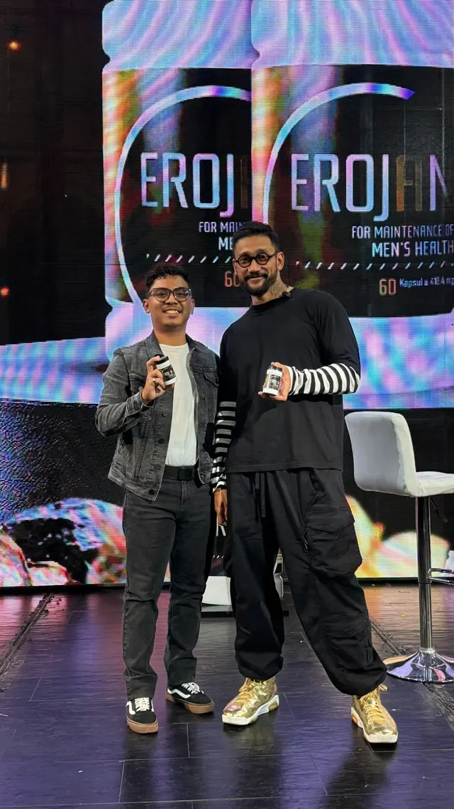

Tentang pengelola
Informasi EROJAN oleh Eza
Eza adalah kontak untuk informasi produk EROJAN by Wellous dan pemesanan melalui situs eroforza.com.
Informasi EROJAN dan pemesanan melalui WhatsApp 0813-9193-9099.
Tanya Eza via WhatsApp ↗Apa yang dapat ditanyakan?
Anda dapat menanyakan komposisi, informasi pada label, kemasan, cara memeriksa registrasi, dan rincian pemesanan. Percakapan dilakukan melalui WhatsApp; situs ini tidak menyediakan layanan diagnosis atau konsultasi medis.

Sumber informasi produk
Informasi disusun dari materi produk dan catatan pemeriksaan sumber pada 25 Oktober 2026. Situs ini bukan situs regulator. Nomor registrasi dan data kemasan perlu dicocokkan kembali pada sumber resmi sebelum membeli.
- Cek BPOM: TI223079121.
- Portal BPJPH: REG RI HL MY000017890124.
- Komposisi dan informasi kemasan EROJAN.
Sebelum memesan
Konfirmasikan rincian produk, harga, stok, pengiriman, pembayaran, dan penanganan masalah pesanan kepada Eza sebelum menyetujui pembelian. Lihat alur pemesanan.